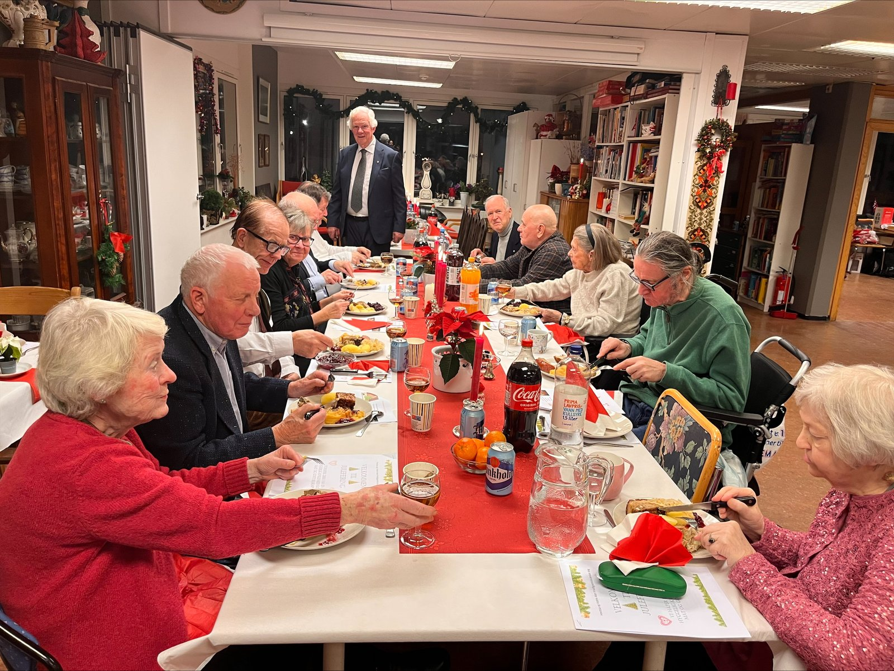
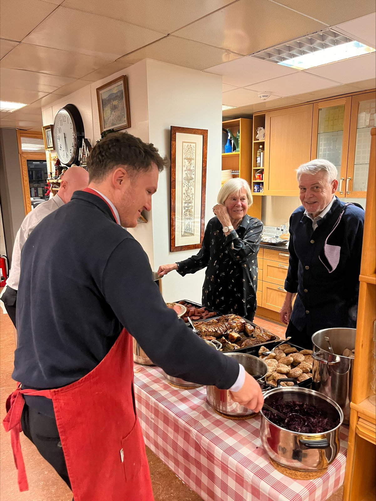
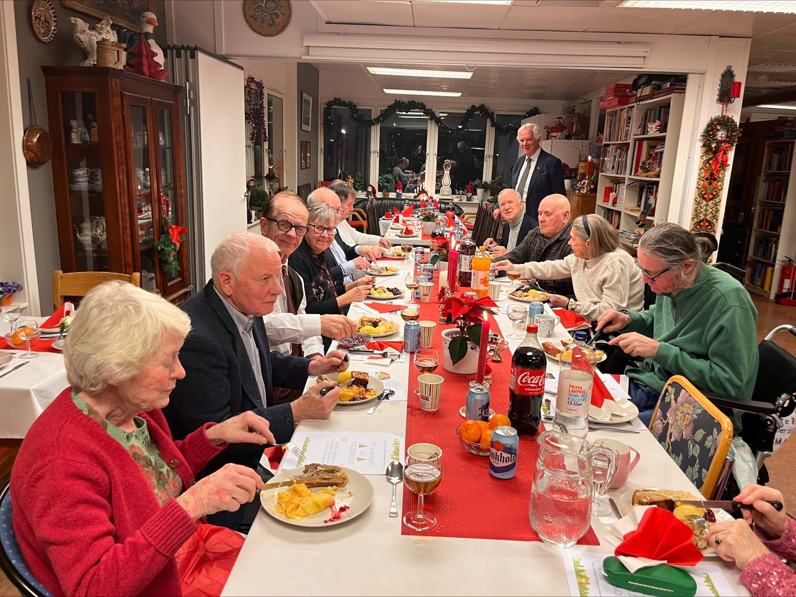
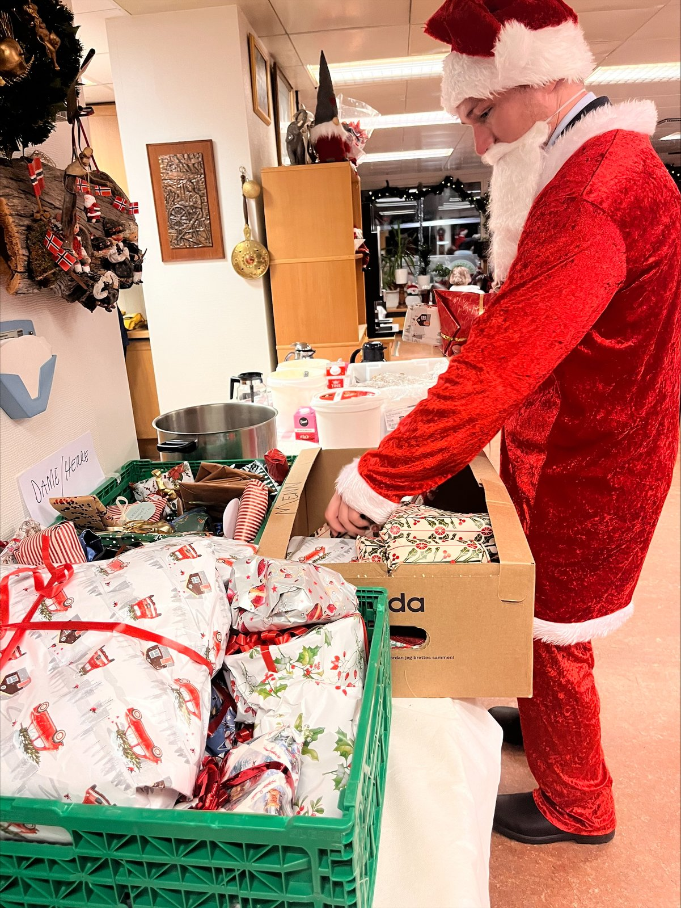
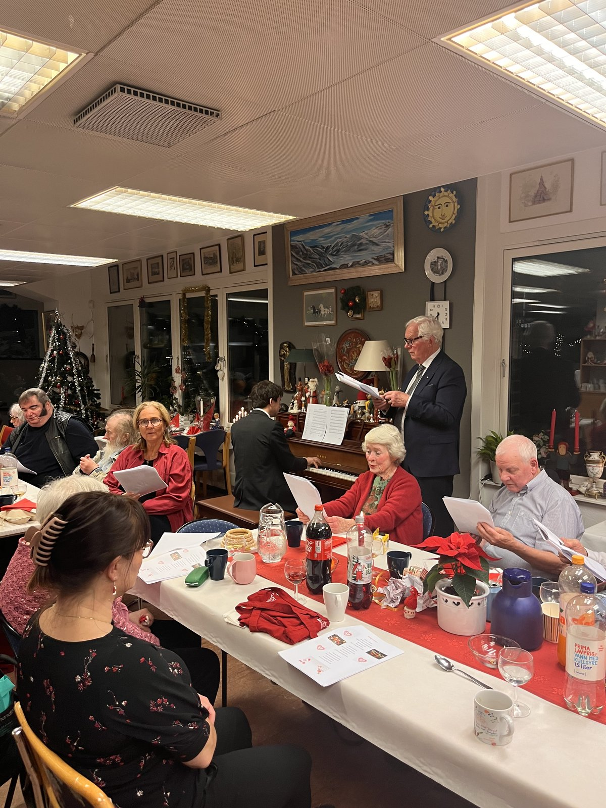
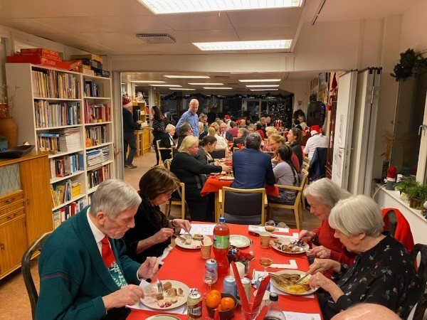

En magisk julaften på Hovstua - fellesskap, tradisjon og rause bidrag
For 24. året på rad ble dørene åpnet for julaftenfeiring på Hovstua i Vestre Aker. Med rekordmange gjester, nydelig mat fra gode naboer og en god gjeng med frivillige, ble kvelden en uforglemmelig feiring av fellesskapet.
Det er noe helt eget med stemningen når lysene tennes på Hovstua julaften. I år satte vi ny rekord med hele 70 gjester til bords, i tillegg til at 40 porsjoner med julemat ble hentet og kjørt ut til de som feiret hjemme. Dette arrangementet er et resultat av et nært og godt samarbeid mellom bydelen, Hovstua, Oslo Vest Frivilligsentral og Vestre Aker Frivilligsentral.
En hyllest til «Julesjefen» Ola og de frivillige
Ingen julaften uten Ola. I imponerende 24 år har han holdt i tøylene som julesjef. Hans erfaring og brennende engasjement er selve fundamentet for at denne tradisjonen står så støtt. Med seg i år hadde han en god gjeng på ni dedikerte frivillige som gjorde en formidabel innsats for at alle skulle føle seg velkomne.

En stor takk også til Kjell Even, leder på Hovstua, og bydelens frivillighetskoordinator Marianne. Deres støtte og tilrettelegging i kulissene er helt avgjørende for at alt fra logistikk til hygge går hånd i hånd.
En av de viktigste suksessfaktorene for kvelden er den nydelige maten. I fem år på rad har Scandic Hotel Holmenkollen Park vist en enorm raushet ved å sponse oss med ekte julemat. Også i år leverte de hele 120 porsjoner med nydelig, ferdiglaget mat som vi kunne hente på selve julaften. Dette faste bidraget betyr utrolig mye for oss, og gjestene setter umåtelig stor pris på den profesjonelle kvaliteten på julemiddagen.
Rundt den gode maten satt gjestene i lokaler som var vakkert pyntet med blomster fra Skajem Hagesenter, som trofast stiller opp med det estetiske løftet hvert år. Stemningen ble ytterligere forsterket av sang og musikk, som sørget for den helt rette julefreden.
Under treet bugnet det av pakker. Vi ønsker å sende en stor takk til alle dere som har bidratt med julegaver - ingen nevnt, ingen glemt. Det å se gleden når gavene deles ut, er et av kveldens absolutte høydepunkter.
Takk til alle som bidro til at den 24. julaftenfeiringen på Hovstua ble en kveld fylt med varme og glede. Vi gleder oss allerede til neste år!
Flere glimt fra kvelden



